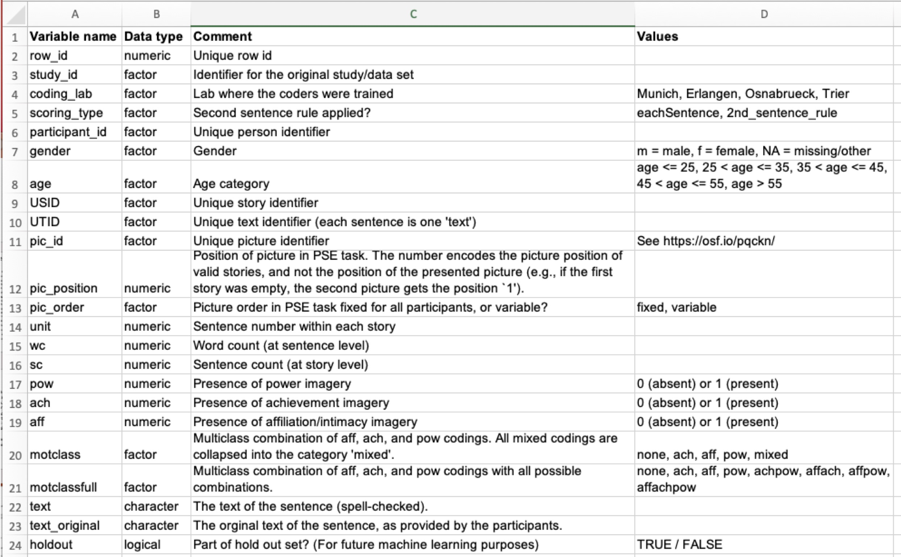

flowchart TD A[Einlesen und Aufbereiten] --> Z[Zusammenfassen] Z --> V[Visualisieren] V --> M[Modellieren] M --> I[Interpretieren] I --> K[Kritisieren] K --> Ü[Amüsieren] Ü --> A
10 Auswerten: Überblick
10.1 Lernsteuerung
10.1.1 Lernziele
- Sie können die typischen Schritte einer Datenanalyse (von Forschungsdaten der Psychologie) benennen.
- Sie können grundlagende Forschungsdesigns auswerten (mit R).
- Sie können Grenzen Ihrer Auswertungsmethodik nennen.
10.1.2 Position im Lernpfad
Sie befinden sich im Abschnitt “Auswertung” in Abbildung 1.2. Behalten Sie Ihren Fortschritt im Projektplan im Blick, s. Abbildung 1.3.
10.2 Überblick zur Datenanalyse
Mühsam haben Sie Ihre Studie geplant, minutiös den Versuchsplan ausgeheckt, pedantisch die Messinstrumente bestimmt. Dann! Die Datenerhebung! Versuchspersonen, manche nervig, manche freundlich. Ist Forschung denn so anstrengend? Endlich! Geschafft - die Daten sind im Sack, sozusagen. Die Datenerhebung ist abgeschlossen. Was jetzt?
10.2.1 Wozu ist das gut?
Würden Sie einem Medikament trauen, von dem es heißt, das Forschungsteam hatten keinen Bock, Statistik ist zu stressig, aber sie hätten da so ein Gefühl, könnte schon was bringen, die Pille, immer rein damit. Was?! Sie zögern sich das Medikament einzuwerfen? Sie hätten es lieber genauer, sicherer, belastbarer? Es ginge schließlich um ihre Gesundheit?
Also gut, Sie haben es so gewollt: Gehen Sie geradeaus weiter zur Statistik.
10.2.2 Über 7 Brücken musst du gehen: Die Schritte der Datenanalyse
In etwas mehr Detail sieht der Fortgang Ihrer Datenanalyse so aus:
Einlesen und Aufbereiten: Nachdem Sie die Daten in R importiert haben, bereiten Sie sie auf. Das klingt läppisch, langweilig fast und nicht so cool wie Modellieren. Schon richtig. Fakt ist aber, dass dieser Teil der Analyse häufig ein Großteil der Zeit benötigt. Wahr ist: Das Daten aufbereiten ist enorm wichtig. Typische Beispiele für solche Tätigkeiten sind das Behandeln fehlender Werte, das Umformen von Tabellen und das Zähmen von Extremwerten
Zusammenfassen: Nachdem Sie die in Ordnung gebracht haben, fassen Sie sie zusammen, um zentrale Trends zu versethen. Praktisch gesprochen berechnen Sie Maße der Lage, der Streuung und des Zusammenhangs.
Visualisieren: Der Mensch ist halt ein Augentier. So ein schönes Diagramm macht einfach was her und besticht auch den strengsten Gutachter.
Modellieren: Ah, hier kommt der Teil, in dem der Connaisseur seine Muskeln spielen lassen kann: Bayes-Inferenz, multiple Regression, Moderation, Mediation, Kausalanalyse… Ich weiß, Sie können Ihre Freude kaum noch zügeln, aber geduldigen Sie sich noch einen kleinen Augenblick.
Interpretieren: So ein Modell bzw. die entsprechende Funktion in R spuckt einige Zahlen aus. Aber was sagt uns das jetzt? Das würden Sie auch gerne wissen? Prima! Finden wir es zusammen raus.
Kritisieren: Jetzt müssen Sie stark sein. Keine Analyse ist perfekt. Keine Studie ist abschließend. Niemand hat den goldenen Gral gefunden. Okay, aber bisher haben Sie sich auch noch nicht an der Sache versucht! Jedenfalls bricht niemanden ein Zacken aus der Krone, wenn man aufzeigt, wo noch Forschungslücken sind, auch nach der eigenen Studie. Oder sogar, welche Schwächen die eigene Studie bzw. Analyse hat und was man beim nächsten Mal noch berücksichtigen könnte.
Amüsieren: So, irgendwann ist auch gut. Jetzt belohnen Sie sich mal für die ganze harte Arbeit des Studierens.
10.3 Reproduzierbarkeit
Transparenz ist ein zentrals oder das zentrale Gütemaße der Wissenschaft. Darum sollten Sie alles dran setzen, dass Ihre Studie bzw. die Analyse Ihrer Daten nachvollziehbar ist. Wesentliche Faktoren dafür sind:
- Sie reichen Ihre Rohdaten ein (inkl. Codebook)
- Sie reichen Ihr Analyseskript ein
- Sie reichen Ihre Stimuli ein (sofern nicht öffentlich verfügbar)
- Sie reichen Ihre Messinstrumente ein (sofern nicht öffentlich verfügbar)
- Sie dokumentieren Ihr Vorgehen und reichen es ein
10.3.1 Codebook
Ein Teil der Dokumentation ist ein Codebook (auch Data-Dictionary genannt). Ein Codebook erläutert die Namen der Variablen in Ihrer (Roh-)Datentabelle, s. Abbildung 10.1.

10.4 Grundlagen der Datenanalyse
Hier finden Sie einen Überblick zu den Grundlagen der Datenanalyse mit einem Fokus auf die Regressionsanalyse. Das Zeug sollten Sie drauf haben.
10.5 Wie man Umfragedaten auswertet
Hier finden Sie (m)eine Anleitung zur Auswertung von Umfragedaten.
10.6 Checkliste zur Datenanalyse
Hier sehen Sie im Überblick die Schritte, die in vielen Fällen sinnvoll sind, um Daten auf einem guten Niveau auszuwerten.
- Vorverarbeitung
- Importieren
- Aufbereiten (Umkodieren, fehlende Wert versorgen, Transformieren, neue Spalten berechnen)
- Explorative Analyse
- Daten zusammenfassen (zentrale Tendenz, Streuung, Zusammenhang)
- Daten visualisieren
- Modellierung
- Modell berechnen
- Parameter berichten (Punkt- und Intervallschätzer)
- Parameter visualisieren
- Nullhypothesen testen (ROPE)
- Modellgüte berichten (R-Quadrat)
10.7 Aufgaben
Auf dem Datenwerk finden Sie eine Anzahl an Aufgaben zum Thema Datenanalyse.